모델별 구현 결과
Anima · MOSS-Image · Krea 2 모두 4가지 기능을 동일한 순서로 비교합니다. (클릭하면 확대)
Generated & Token Attention Overlay
Generated
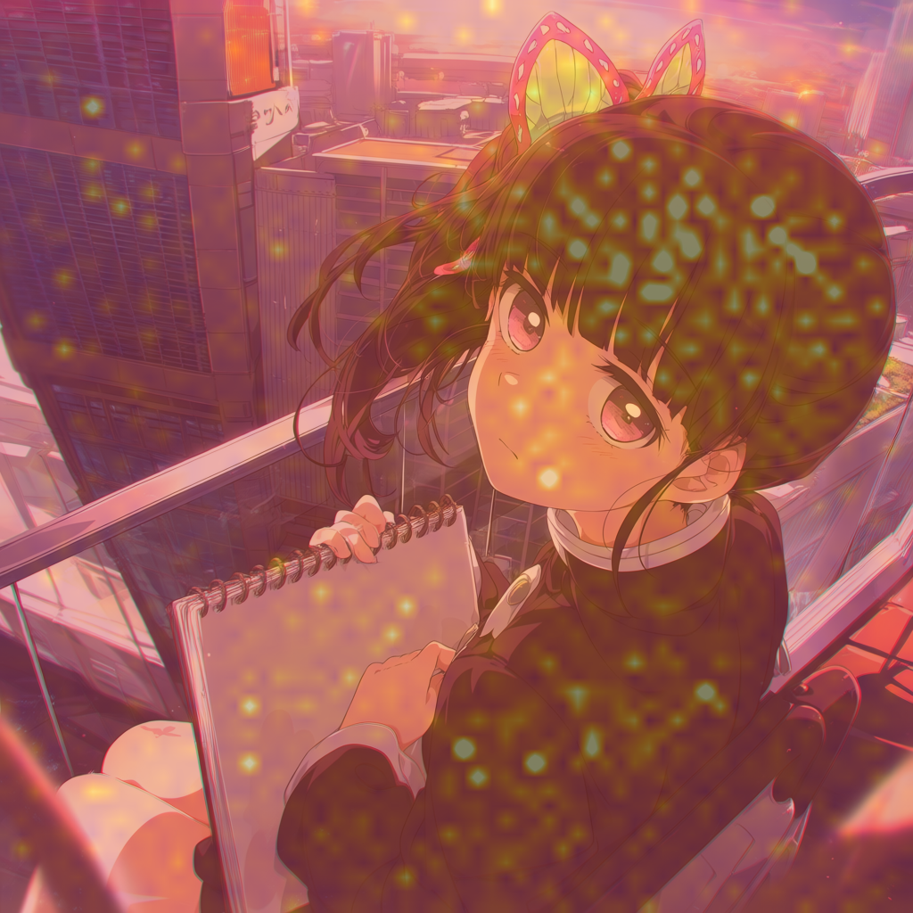
Attention Overlay (tsuyuri kanao)
Block Contribution Ranking (Top-20% vs Bottom-20%)
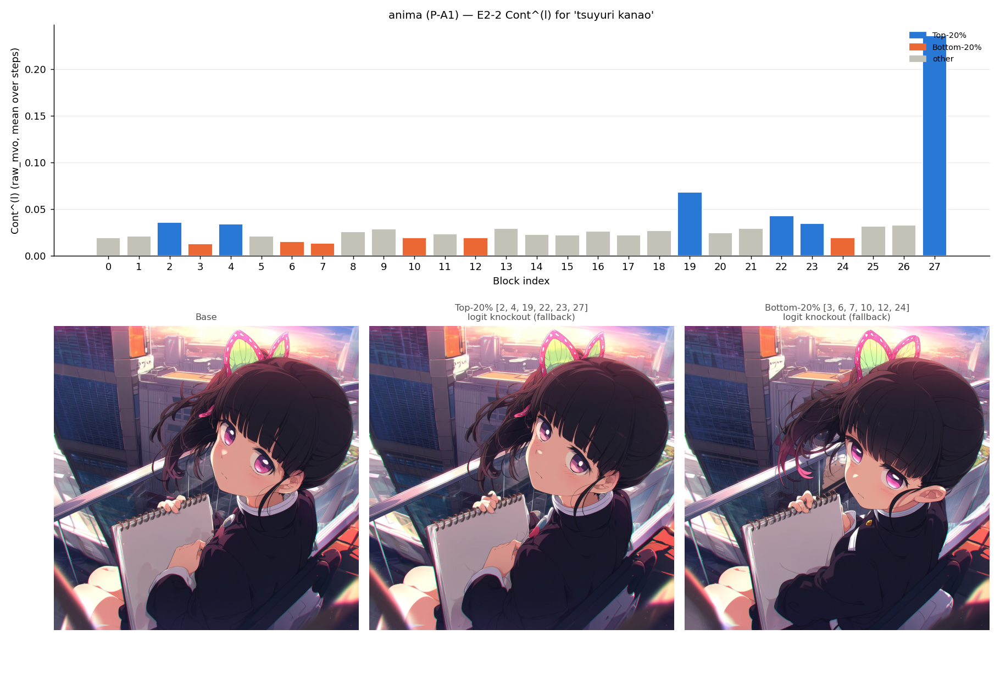
Cont Ranking & Ablation (P-A1)
Attention vs Same-State Δv
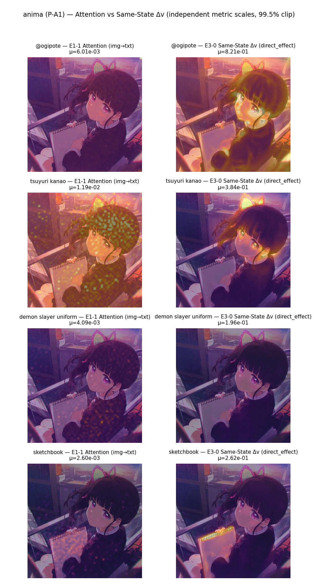
Attention vs Same-State Δv (P-A1)
초반 스텝 Text Attention 증폭 Before/After
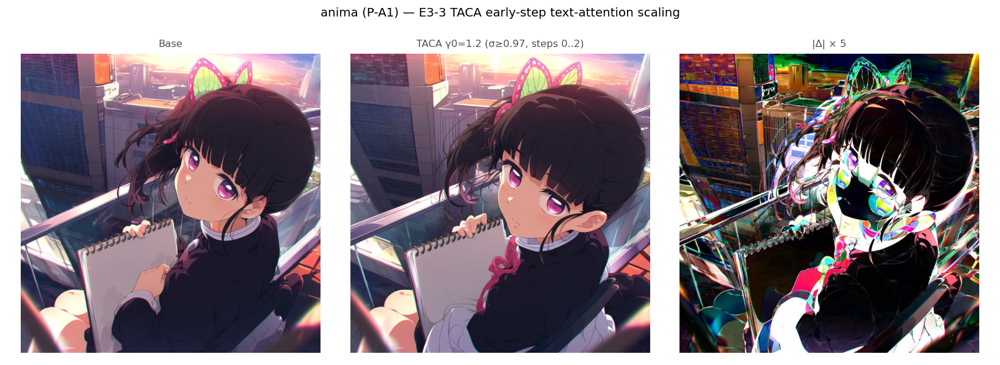
TACA Before/After (P-A1)
Red → Blue Scarf (Early / Mid / Late Blocks)

Mid 블록 집중 전이 (0.746)
Semantic Token vs Template/Register Token 비중
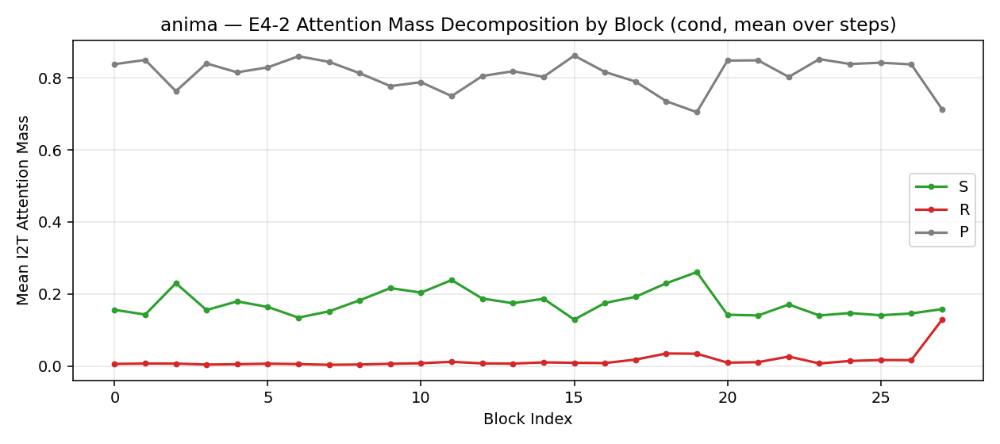
Template Share 8.3% (P-A1)
Generated & Token Attention Overlay
Generated
Attention Overlay (hoshino ai)
Block Contribution Ranking (Top-20% vs Bottom-20%)

Cont Ranking & Ablation (P-M1)
Attention vs Same-State Δv
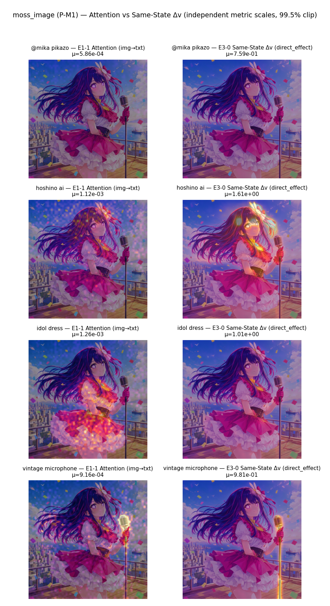
Attention vs Same-State Δv (P-M1)
초반 스텝 Text Attention 증폭 Before/After
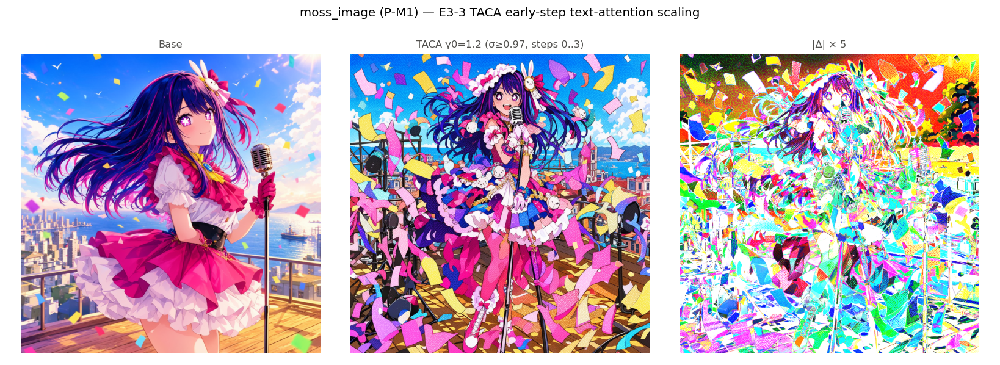
TACA Before/After (P-M1)
Red → Blue Scarf (Early / Mid / Late Blocks)
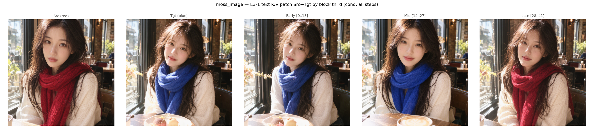
Mid(0.365) · Late(0.330) 분산 전이
Semantic Token vs Template/Register Token 비중
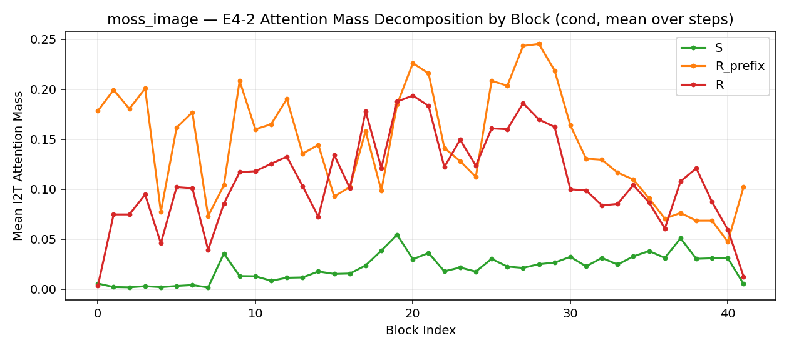
Template Share 92.3% (P-M1)
Generated & Token Attention Overlay
Generated
Attention Overlay (navy trench coat)
Block Contribution Ranking (Top-20% vs Bottom-20%)
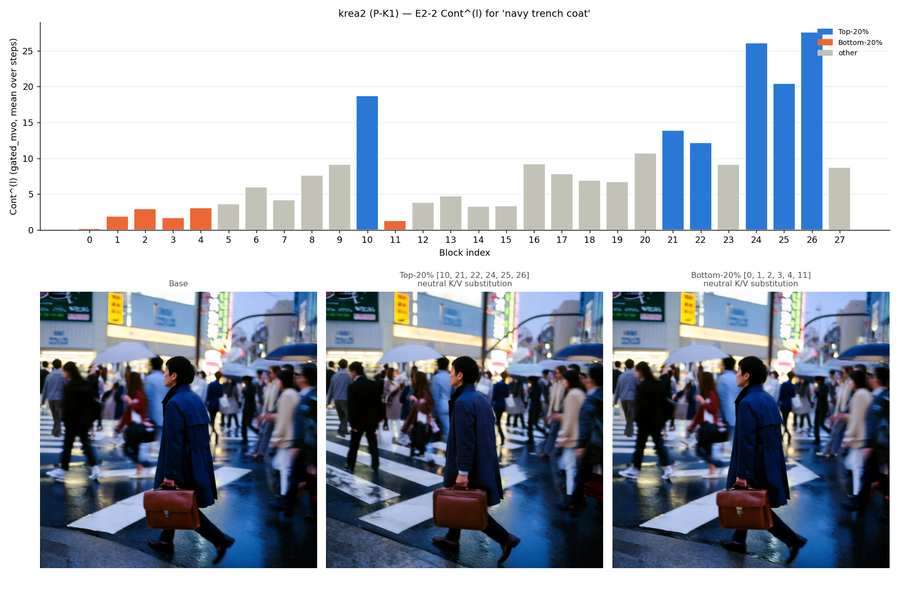
Cont Ranking & Ablation (P-K1)
Attention vs Same-State Δv
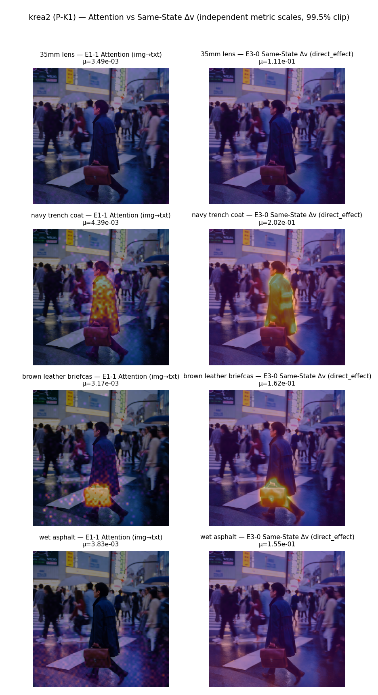
Attention vs Same-State Δv (P-K1)
초반 스텝 Text Attention 증폭 Before/After
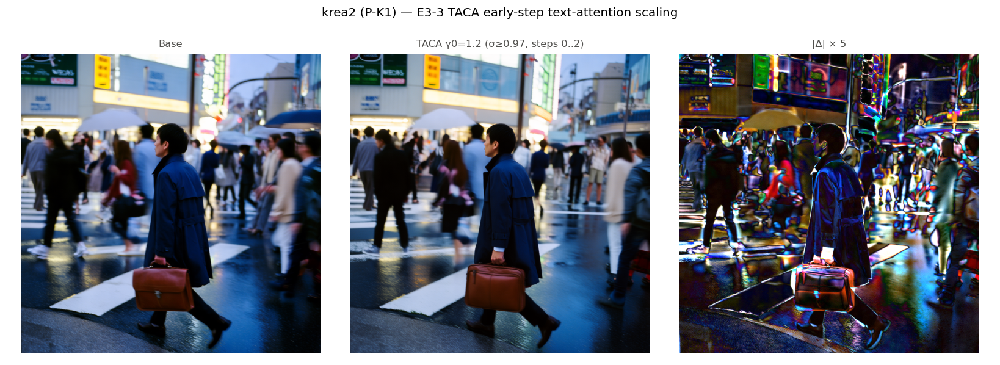
TACA Before/After (P-K1)
Red → Blue Scarf (Early / Mid / Late Blocks)
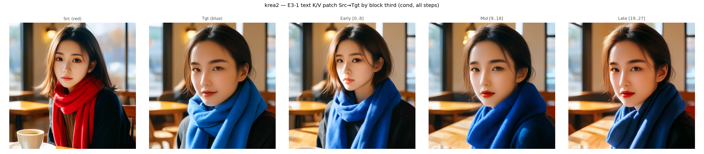
전 구간 분산 (0.10~0.12)
Template Share & Early-Block [0..5] Gate Ablation
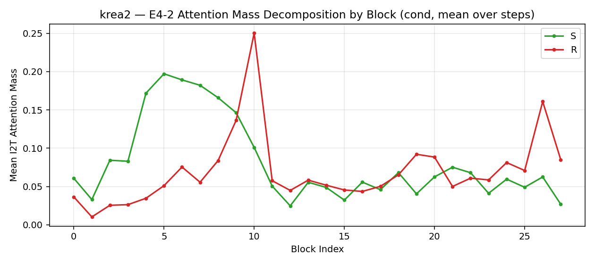
Template Share 46.1% (P-K1)
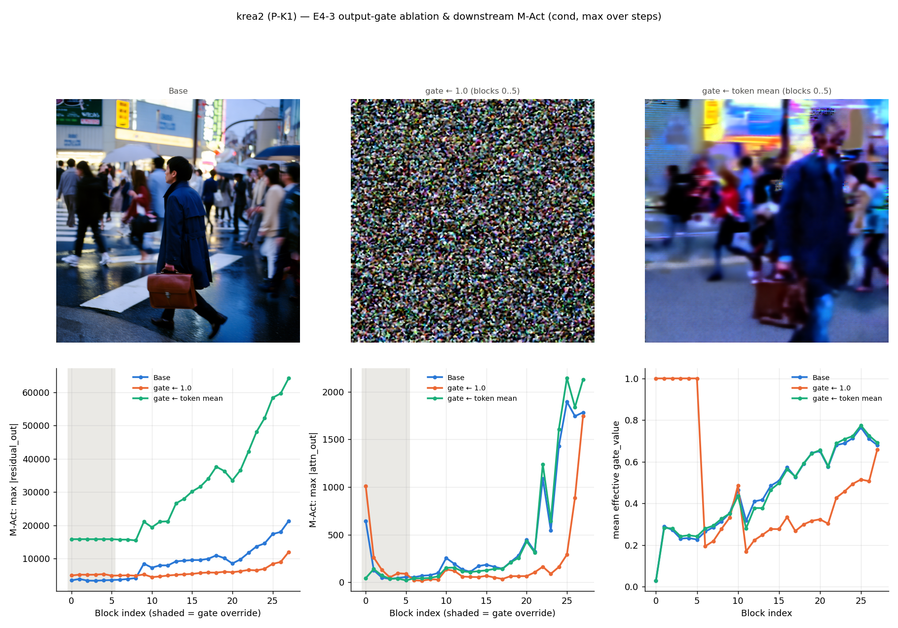
Early-Block Output Gate Ablation — Residual Peak 3.01× (P-K1)